1. Introduction
Mandalay District is the urban core of central Myanmar. Its seven townships span from the dense historic grid of Chanayethazan and Mahaaungmyay, through the industrial suburbs of Chanmyathazi and Pyigyitagon, out to the large, semi-rural townships of Amarapura and Patheingyi. This project uses open building footprints to compare the urban structure of these townships on a common basis.
2. Data
- Building footprints — 286,818
polygons in Mandalay District, clipped from the
GlobalBuildingAtlas
ODbL tile
asiawest/e095_n25_e100_n20. GBA merges OpenStreetMap and Microsoft Building Footprints; every feature carries asourceattribute ofosmorms. - Township boundaries (admin-3) — from the MIMU/UN OCHA
Myanmar common operational datasets, filtered to the seven
townships with
adm2_pcode = MMR010D001.
No attribute about building use, height, age, or occupancy is available. All findings below are based purely on the geometry (footprint polygons) and the administrative overlay.
3. Methodology
- Reproject buildings and townships to EPSG:32646 (UTM 46N, metres) — a single metric CRS used for every area, length, and shape measurement.
- For every footprint compute: area (m²), perimeter (m), Polsby-Popper compactness, minimum-rotated-rectangle fill ratio, and MRR elongation.
- Assign each building to a township with a point-in-polygon test on the footprint centroid; buildings whose centroid falls outside every polygon (boundary slivers) are attached to the nearest township by a nearest-neighbour fallback.
- Aggregate to township level: counts, total built-up area, density, built-up ratio, footprint-area summary statistics, mean shape indices, and size-class shares.
- Size classes: breaks at
30 / 80 / 200 / 1000 m²(very small / small / medium / large / very large) — chosen from the empirical distribution and common urban-morphology conventions.
Every step is a plain Python script under scripts/; the
full pipeline is reproducible from raw inputs with
python run_all.py.
4. Key findings
Chanayethazan is the most built-up township (built-up ratio ≈ 27.0%), while Patheingyi is the least (0.2%). The highest building density belongs to Mahaaungmyay (2,544 buildings per km²). The largest mean footprint — a proxy for the share of industrial, institutional or larger compound buildings — is found in Chanayethazan (mean 118 m²).
5. Maps
5.1 Interactive choropleth
Toggle layers to compare indicators; hover for full township stats.
5.2 Building-density heatmap
5.3 Static reference maps
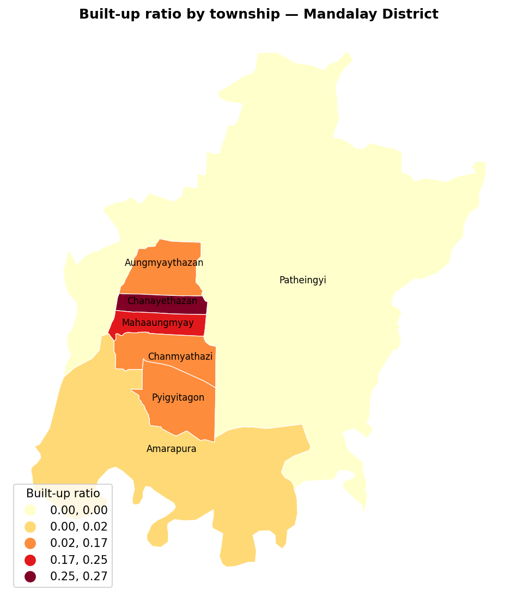
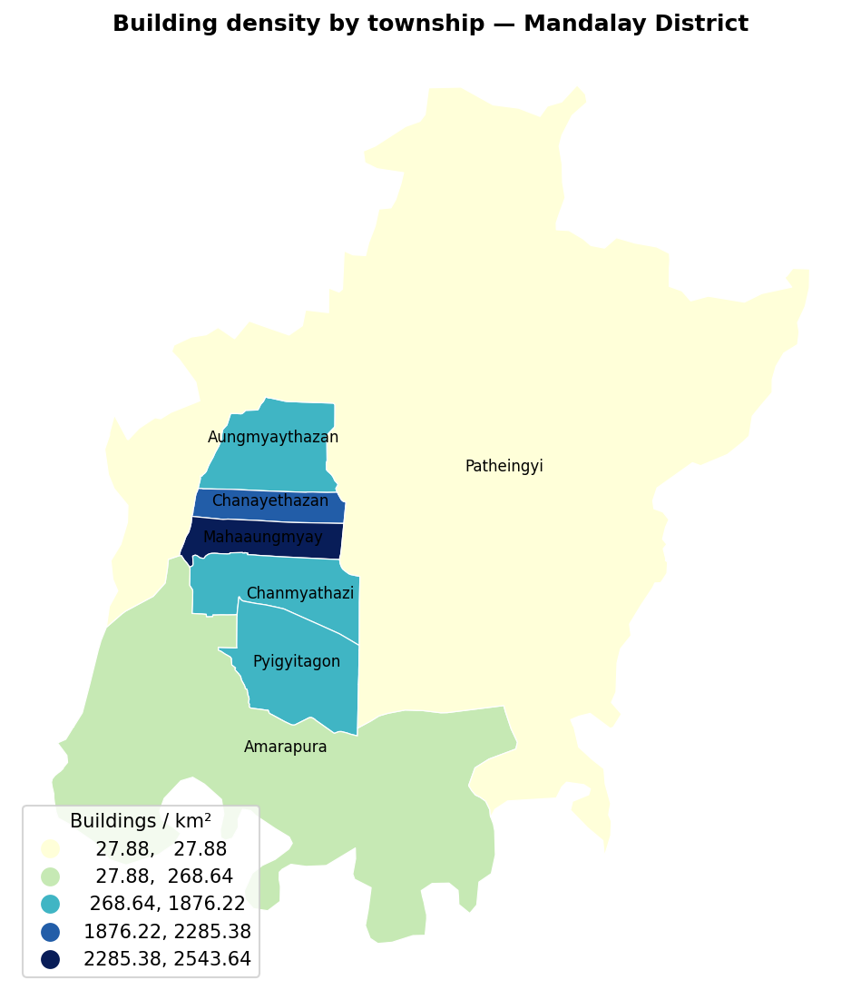
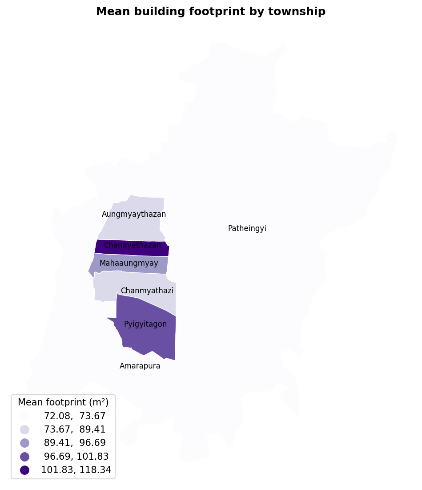
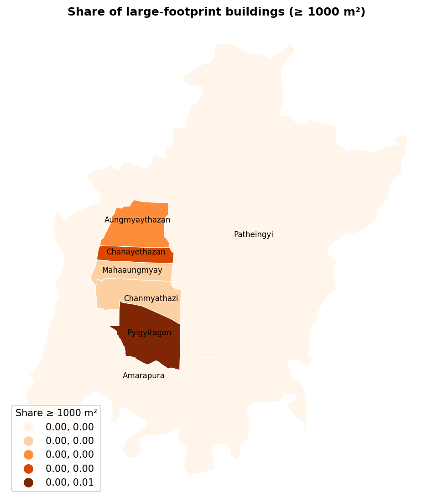
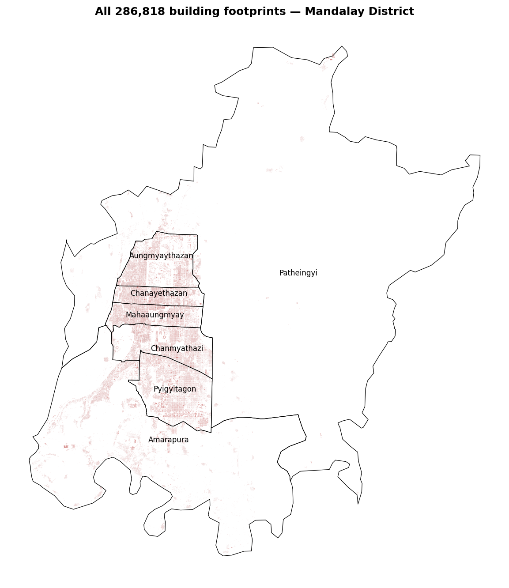
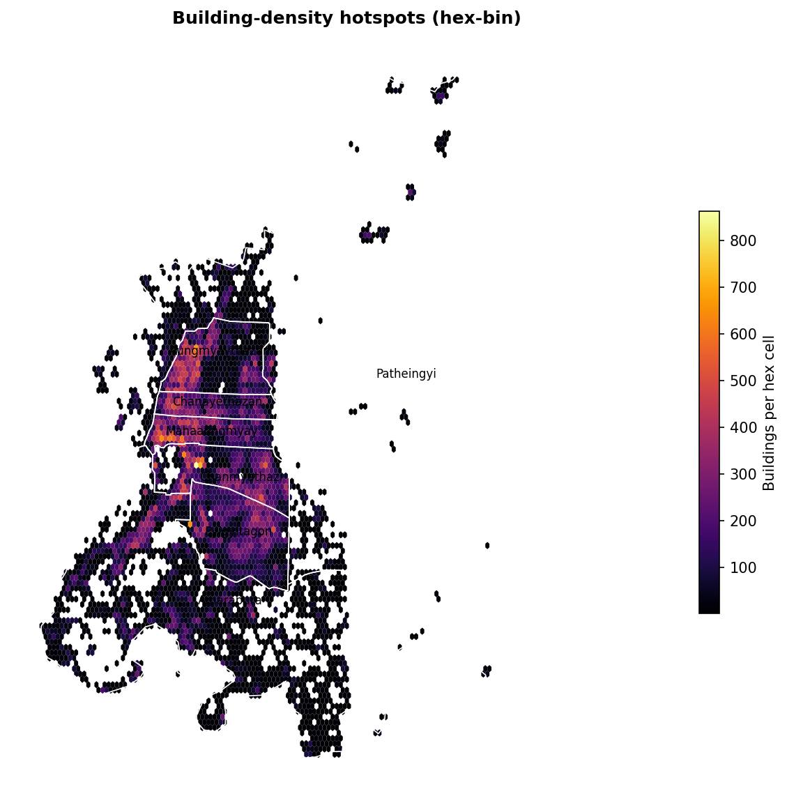
6. Charts
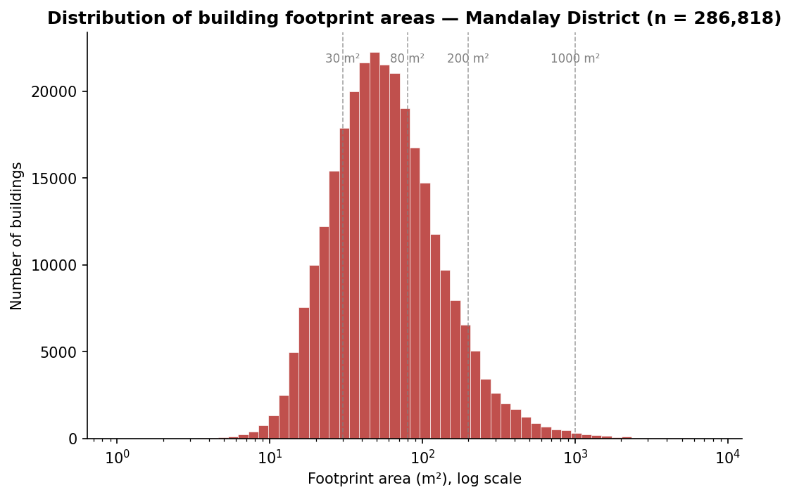
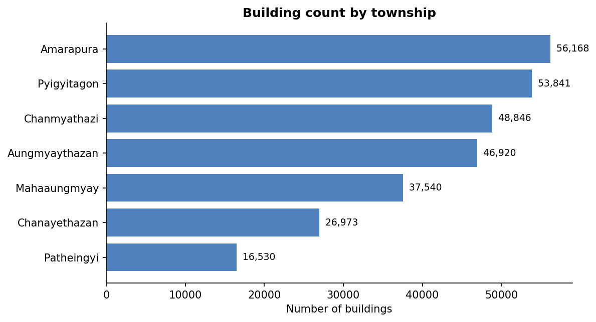
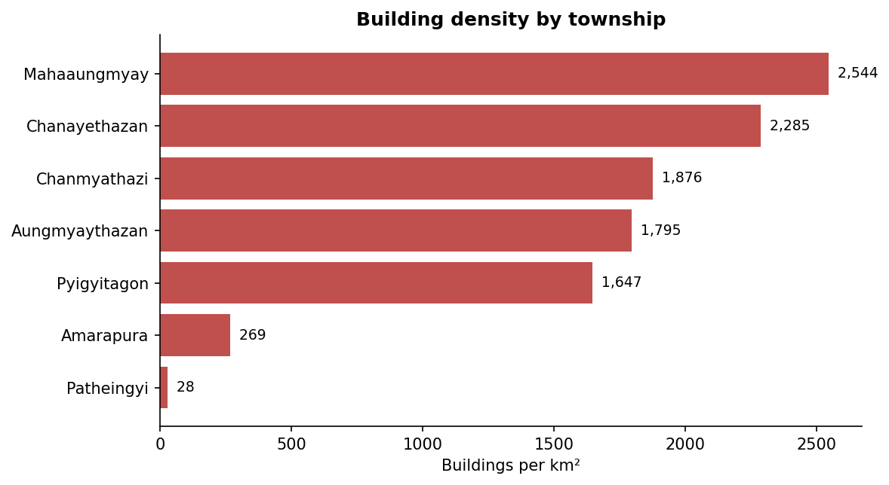
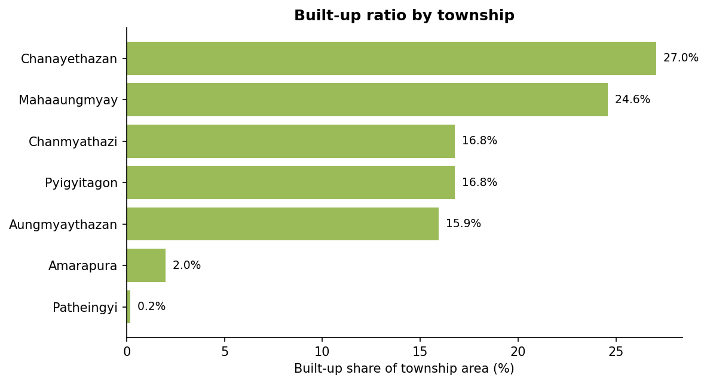
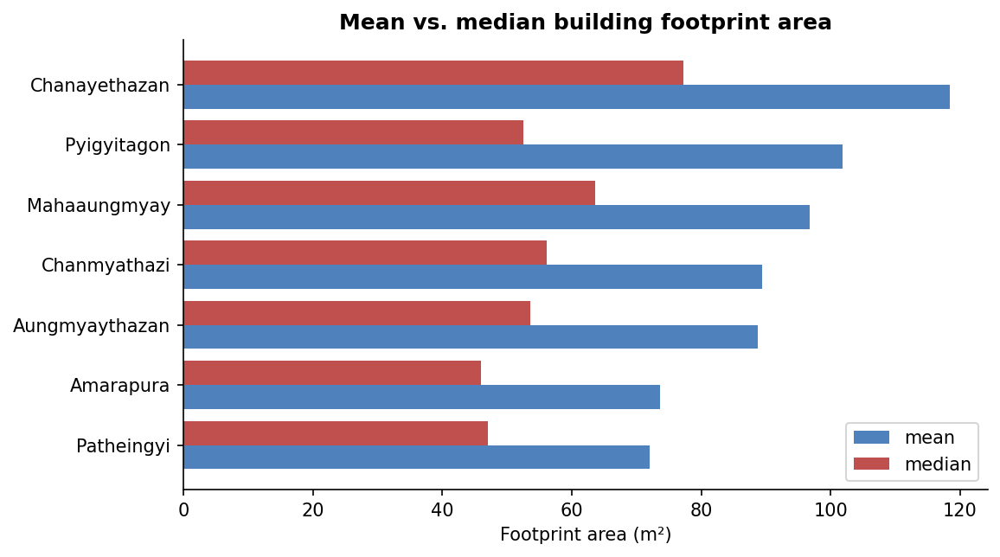
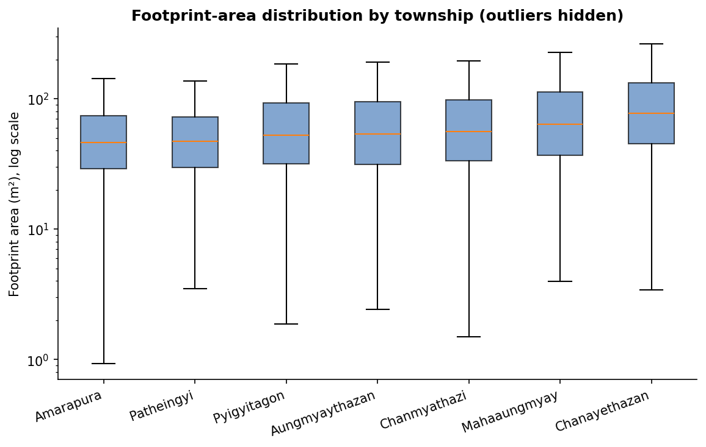
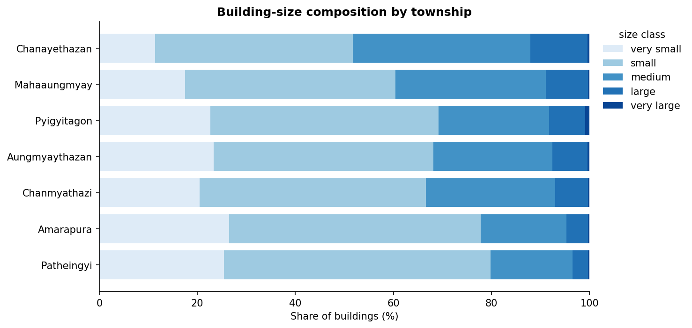
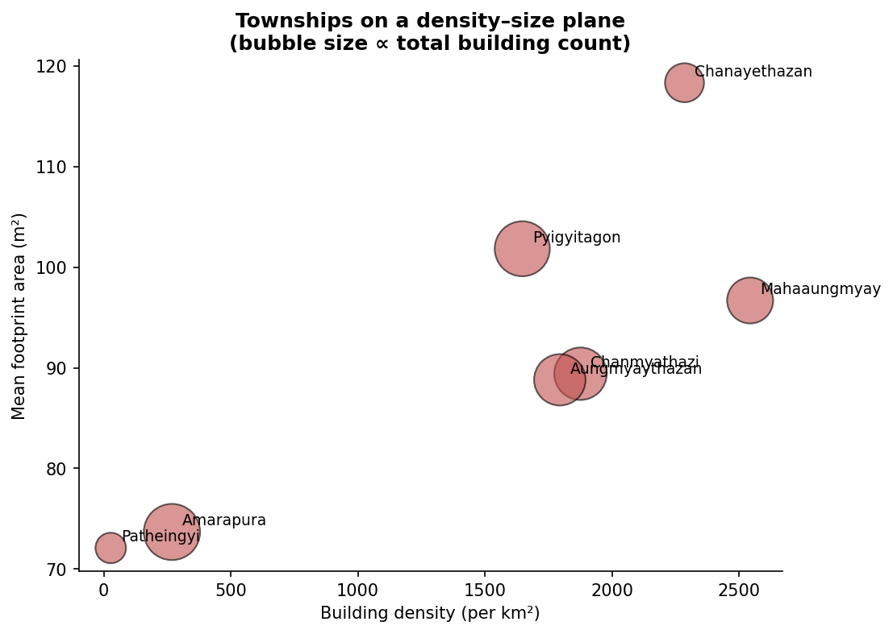
7. Tables
7.1 Township summary
| Township | Area (km²) | Buildings | Built-up area (km²) | Built-up ratio | Density (/km²) | Mean footprint (m²) | Median footprint (m²) | Share ≥1000 m² | Mean compactness |
|---|---|---|---|---|---|---|---|---|---|
| Chanayethazan | 11.80 | 26,973 | 3.192 | 27.0% | 2,285 | 118 | 77 | 0.4% | 0.715 |
| Mahaaungmyay | 14.76 | 37,540 | 3.630 | 24.6% | 2,544 | 97 | 64 | 0.3% | 0.717 |
| Chanmyathazi | 26.03 | 48,846 | 4.367 | 16.8% | 1,876 | 89 | 56 | 0.3% | 0.725 |
| Pyigyitagon | 32.69 | 53,841 | 5.483 | 16.8% | 1,647 | 102 | 53 | 0.9% | 0.736 |
| Aungmyaythazan | 26.14 | 46,920 | 4.167 | 15.9% | 1,795 | 89 | 54 | 0.3% | 0.725 |
| Amarapura | 209.09 | 56,168 | 4.138 | 2.0% | 269 | 74 | 46 | 0.3% | 0.747 |
| Patheingyi | 592.97 | 16,530 | 1.192 | 0.2% | 28 | 72 | 47 | 0.2% | 0.746 |
7.2 Size-class composition
| Township | Total | very small | small | medium | large | very large |
|---|---|---|---|---|---|---|
| Amarapura | 56,168 | 14,856 (26.4%) | 28,865 (51.4%) | 9,826 (17.5%) | 2,476 (4.4%) | 145 (0.3%) |
| Aungmyaythazan | 46,920 | 10,953 (23.3%) | 21,039 (44.8%) | 11,361 (24.2%) | 3,404 (7.3%) | 163 (0.3%) |
| Chanayethazan | 26,973 | 3,070 (11.4%) | 10,871 (40.3%) | 9,785 (36.3%) | 3,130 (11.6%) | 117 (0.4%) |
| Chanmyathazi | 48,846 | 10,006 (20.5%) | 22,529 (46.1%) | 12,897 (26.4%) | 3,276 (6.7%) | 138 (0.3%) |
| Mahaaungmyay | 37,540 | 6,576 (17.5%) | 16,114 (42.9%) | 11,528 (30.7%) | 3,207 (8.5%) | 115 (0.3%) |
| Patheingyi | 16,530 | 4,207 (25.5%) | 8,989 (54.4%) | 2,759 (16.7%) | 534 (3.2%) | 41 (0.2%) |
| Pyigyitagon | 53,841 | 12,225 (22.7%) | 25,035 (46.5%) | 12,144 (22.6%) | 3,965 (7.4%) | 472 (0.9%) |
7.3 Size-class definitions
| Size class | Min (m²) | Max (m²) |
|---|---|---|
| very small | 0 | 30 |
| small | 30 | 80 |
| medium | 80 | 200 |
| large | 200 | 1000 |
| very large | 1000 | ∞ |
8. Limitations
- Footprint completeness varies by source. Microsoft and OSM coverage is not uniform; some very small huts may be missed and some large compounds drawn as one polygon.
- No semantic attributes. Use, height, and population are not in the dataset; size-class labels are shape-based proxies, not land-use classes.
- Centroid-based join. A building split by a township boundary is assigned to whichever township contains its centroid (or, for slivers, the nearest polygon). Area double-counting is avoided but boundary-straddling buildings may be mis-attributed.
- Township
area_sqkmrecomputed in EPSG:32646; differs from the MIMU-published value by < 0.5%.
9. Reproducibility
git clone https://github.com/geonet-myanmar/mandalay-district-buildings
cd mandalay-district-buildings
pip install -r requirements.txt
python run_all.py # full pipeline, writes outputs/ and docs/
The raw clip_mandalay.py step (building extraction from
the 630 MB GBA tile) is included for completeness; the pipeline below
starts from the already-clipped data_raw/ files.